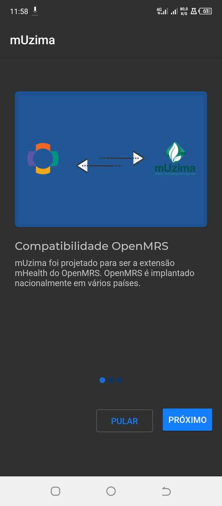
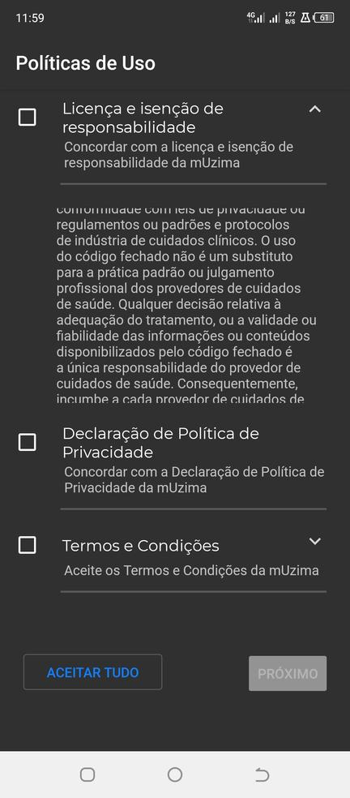
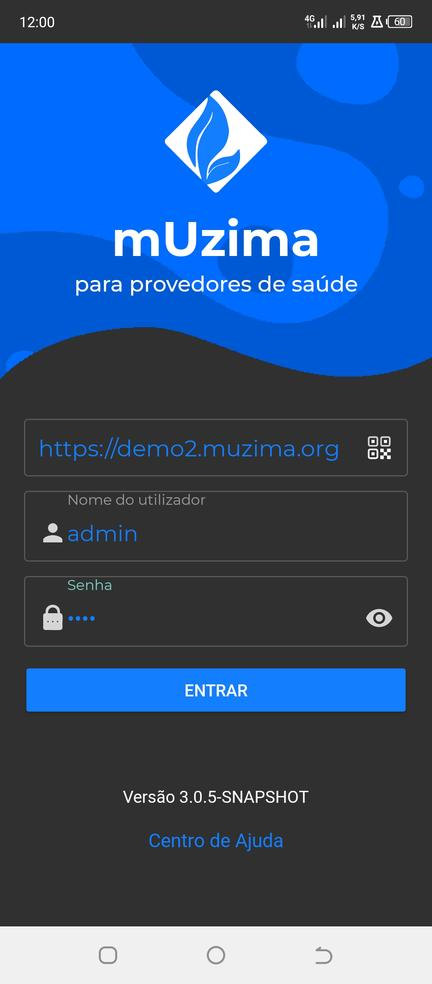
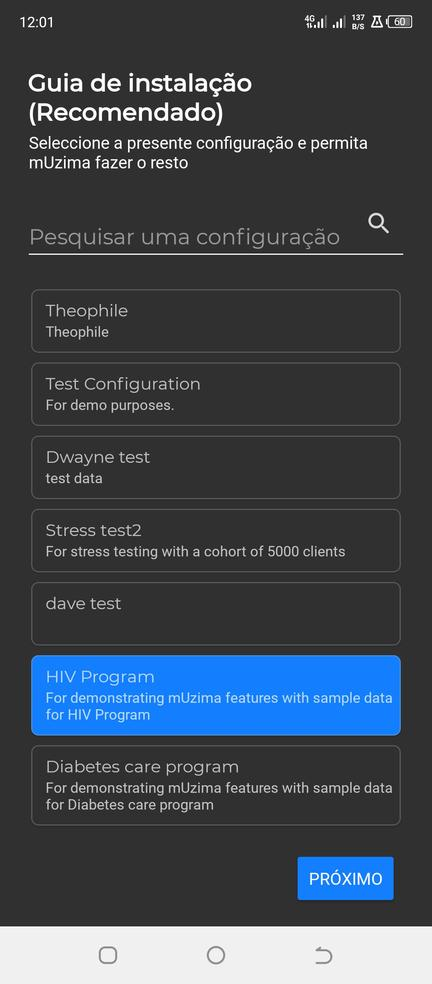
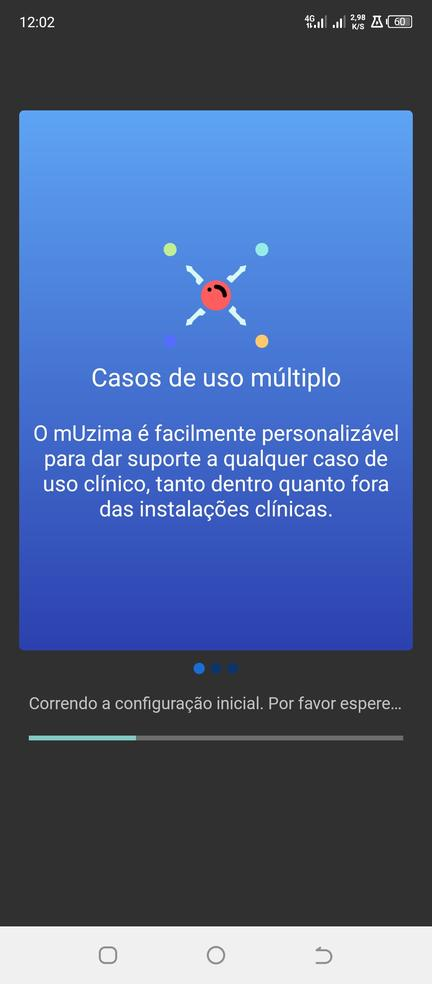
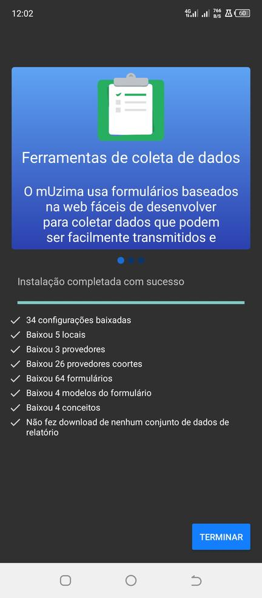
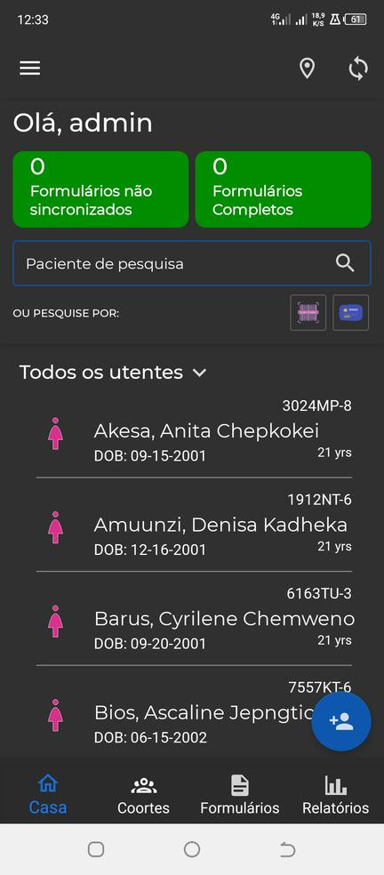

mUzima
mUzima é um aplicativo Android que renderiza formulários html5 com lógica e restrições incorporadas. O aplicativo possui vários prompts, incluindo; texto, número, localização e multimídia que podem ser executados em situações online e offline.
Instalação
Você precisará de um dispositivo Android para instalar o mUzima. Ou instale um emulador se você não tiver um. mUzima é executado no Android versão 7.0 e superior.
Como usar o aplicativo
O aplicativo mUzima aparecerá na sua gaveta de aplicativos. Selecione-o para iniciar o aplicativo.
Etapa 1

- Clique em PRÓXIMO para ver a apresentação de slides ou PULAR para continuar com a configuração.
- Clique no botão PRÓXIMO para uma apresentação de slides dos recursos do aplicativo mUzima. ou clique no botão SKIP para continuar com a configuração do mUzima
Etapa 2

- Leia e concorde com as políticas de uso do software mUzima usando as caixas de seleção.
- Clique no botão ACEITAR TODOS. Em seguida, clique no botão PRÓXIMO para continuar com a configuração do mUzima.
Etapa 3

Na primeira vez que você efetuar login, você terá três prompts de entrada de texto.
- Campo URL: este é o prompt da url para o servidor com o qual o aplicativo se comunicará. por exemplo
"https://demo2.muzima.org".
- Nome de usuário: insira o nome de usuário válido para o usuário usar o aplicativo. Este usuário deve ser um válido
provedor no servidor.
- Senha: digite a senha para o nome de usuário fornecido no prompt de nome de usuário.
- Clique em LOGIN para autenticar.
Após a autenticação bem-sucedida, você será levado por um assistente para configurar o aplicativo mUzima.
Etapa 4

- O aplicativo mUzima versão 3.x usa configuração guiada.
- Selecione o programa que deseja usar na lista de programas.
- Clique no botão PRÓXIMO para continuar configurando o mUzima.
Etapa 5

- O aplicativo mUzima será configurado.
- O tempo de instalação depende da quantidade de dados baixados do servidor.
Etapa 6

- O aplicativo mUzima será configurado com sucesso
- Clique no botão CONCLUIR para concluir as etapas de configuração.
- Após concluir as etapas para configurar o aplicativo mUzima, o aplicativo mUzima exibirá a página inicial. O software mUzima está pronto para uso.
